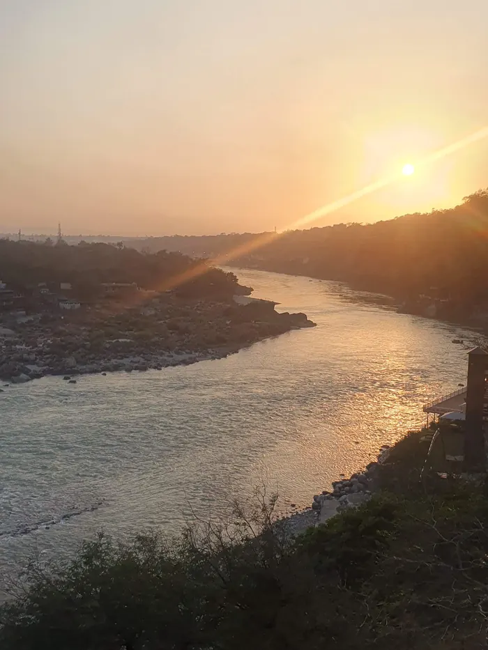
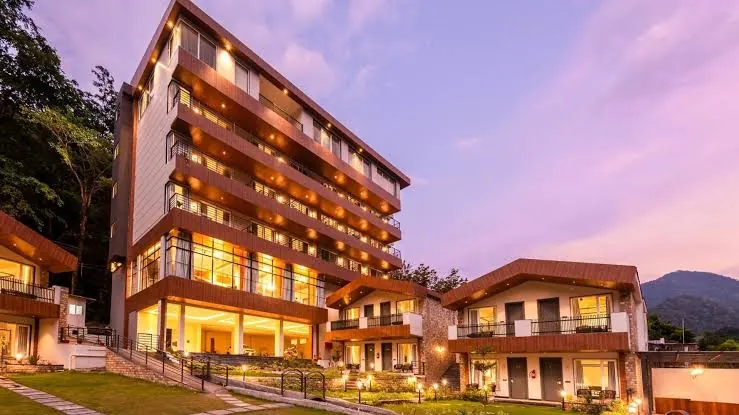
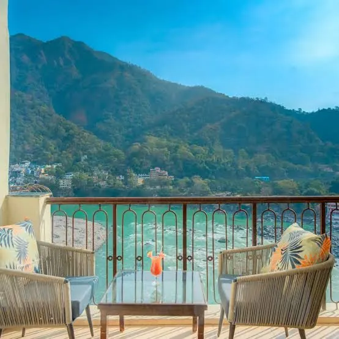
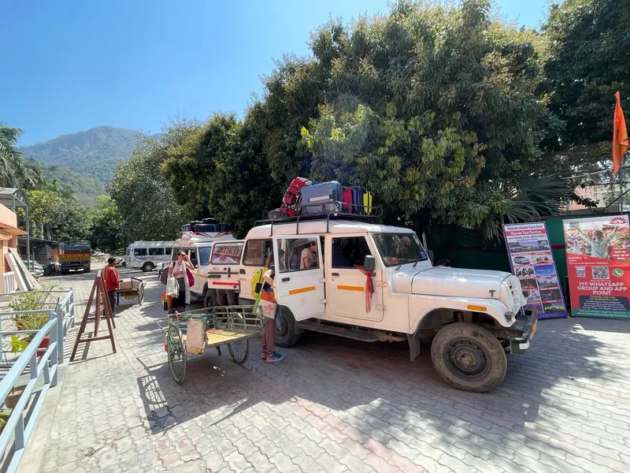

El Último Viaje del Ego
India 2027
Un viaggio di conoscenza di sé nel cuore dell'India.
Un viaggio unico nel cuore dell'India
Parti per un viaggio unico nel cuore dell'India in due settimane affascinanti: un percorso ricco di cultura, spiritualità, laboratori di crescita personale, yoga e meditazione.
El Último Viaje del Ego è una presa di coscienza della nostra identità, delle paure e delle convinzioni che ti porterà in India per guardarti dentro, mettere in discussione ciò con cui ci siamo identificati e aprirci a un riconoscimento più profondo di chi siamo.
Il ritiro unirà diversi strumenti di esplorazione e trasformazione: meditazione, respirazione, movimento, auto-osservazione, dinamiche di gruppo, laboratori e lavoro di conoscenza di sé, guidati da Melania Di Vara e Miquel Canut.
Non serve esperienza precedente di yoga, meditazione o percorsi spirituali. Il ritiro è aperto a chi sente semplicemente il desiderio di fermarsi e approfondire se stesso.

L'India, i suoi paesaggi e la sua tradizione
L'India, i suoi paesaggi, la sua cultura e la sua tradizione spirituale. Non andremo semplicemente a visitare luoghi, ma a vivere l'India come uno spazio di esplorazione e trasformazione.
Osservare, mettere in discussione e lasciar andare
Un'occasione per osservare, mettere in discussione e lasciar andare alcune delle identità, delle storie e dei condizionamenti da cui viviamo. Da lì potrai connetterti con il tuo Sé, con il merito e il valore di te stesso.
Quattordici giorni di esperienza
Yoga e meditazione in una sala di fronte al Gange
Tramonto e rituali sul Gange
Laboratori di crescita personale
Incontri con maestri spirituali
Visite a luoghi sacri
Spazi di silenzio
Natura ai piedi dell'Himalaya
Vita quotidiana di Rishikesh
Rishikesh
Durante il ritiro alloggeremo in un hotel con tutti i comfort, che sarà la nostra casa e il nostro spazio di pratica. Rishikesh ci permetterà di alternare il lavoro interiore all'esperienza di stare sul Gange e vivere l'atmosfera di una delle grandi città spirituali dell'India.
- Pratiche di yoga, respirazione e meditazione.
- Laboratori e sessioni di El Último Viaje del Ego.
- Dinamiche ed esperienze di gruppo.
- Spazi di riflessione e osservazione personale.
- Momenti di riposo e integrazione.



La sala yoga, di fronte all'Himalaya
Uno spazio luminoso con vista sulle montagne, dove ogni mattina praticheremo yoga, respirazione e meditazione come parte del viaggio interiore.

Cosa fa parte del ritiro
Il programma includerà diverse esperienze ed escursioni spirituali nel corso di questi 14 giorni.
- Rituali tradizionali lungo il Gange.
- Visita al Parmarth Niketan, uno degli ashram più importanti dell'India.
- Incontro con Maa Gyaan, guida spirituale riconosciuta da 30 anni.
- Grotta di Vashista.
- Visita a templi di fronte all'Himalaya.
- Tempo libero per conoscere la città.
- Esperienze gastronomiche e incontri fuori dall'hotel.
- Passeggiate nella natura nei dintorni di Rishikesh.
Spazi di silenzio e riposo
Non vogliamo riempire ogni momento del viaggio. Ci saranno anche spazi di tempo libero, riposo e silenzio, per integrare l'esperienza e godersi l'India senza fretta: passeggiare per Rishikesh, godersi i suoi caffè e ristoranti, ricevere trattamenti ayurvedici o massaggi, riposare, stare sul Gange o esplorare la città per conto tuo.
Alcune di queste esperienze saranno facoltative e non incluse nel prezzo del ritiro.
Cosa include il ritiro
Incluso
- 13 notti di alloggio in camera doppia condivisa con bagno, in hotel (camera singola disponibile con costo aggiuntivo).
- I pasti indicati nel programma.
- Trasferimenti durante le escursioni e le attività incluse.
- Tutte le attività previste nel programma dettagliato del ritiro.
- Incontri online di preparazione al viaggio.
Non incluso
- Voli internazionali e nazionali.
- I trasferimenti da e per gli aeroporti, e tra Delhi e Rishikesh.
- Pasti non espressamente indicati nel programma.
- Assicurazione di viaggio.
- Costo del visto.
- Spese personali, mance e donazioni.
- Sessioni di mentoring individuale con Melania o Miquel (extra, su richiesta).
Tutto ciò che non è espressamente indicato in «Cosa include» è a carico di ciascun partecipante.
13 notti in camera doppia condivisa, pasti indicati, escursioni e tutte le attività del programma.
Prenotazione del posto: acconto di 500 €.
Camera singola: disponibile con supplemento, su richiesta.
Prima di partire
Facoltativo: Festival Internazionale dello Yoga
Se vuoi prolungare l'esperienza e restare dopo il ritiro per partecipare al Festival Internazionale dello Yoga, dall'8 marzo 2027 a Rishikesh, ti daremo le informazioni.
Un programma vivo
Il programma che presentiamo è una proposta iniziale dell'esperienza; l'ordine e gli orari delle attività potranno cambiare.
Preiscrizioni aperte
Chi effettua la preiscrizione riceverà poi il programma dettagliato del viaggio, insieme a tutte le informazioni pratiche necessarie.
Chi vi accompagnerà?

Melania Di Vara
Formata in scuole tradizionali in India, ha approfondito in particolare l'Advaita Vedanta con Maa Gyaan. Guida ritiri e immersioni in India e in Europa.
Leggi di più su Melania
Miquel Canut
Oltre 18 anni di esperienza nell'accompagnare percorsi di crescita personale (ferite dell'infanzia, trauma) e trasformazione interiore.
Leggi di più su MiquelPrenota il tuo posto
Per preiscriverti, scrivici e ti invieremo il programma dettagliato e tutte le informazioni pratiche. Il posto si prenota con un acconto di 500 €.